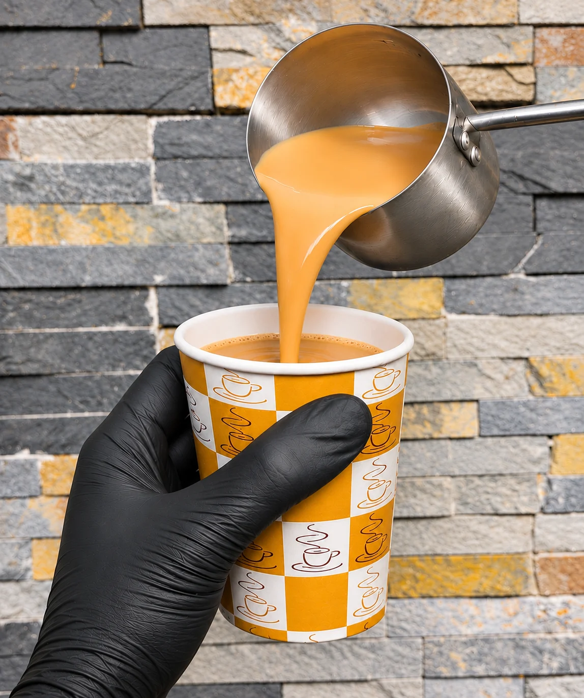

Drop in
Come just for a drink and a catch-up if that is all you want from the visit.
Warm, spiced karak chai made at the café — easy to add to a game night, dessert stop or quick catch-up.

Warm and spiced, served fresh at the café.
Come in just for chai or pair it with dessert and a game. You don’t need a big occasion to stop by.
Drop in for a warm cup of karak chai, a dessert or a longer visit with friends.
Come just for a drink and a catch-up if that is all you want from the visit.
Pair karak with cake, ice cream or another café favourite when you want something more indulgent.
Turn it into a longer visit with a table booking, board games or console gaming.